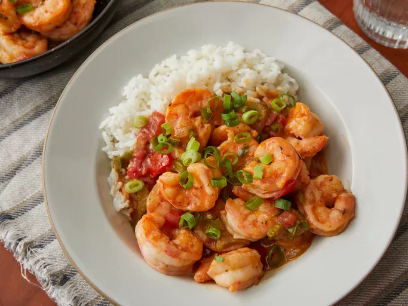

Shrimp Etoufee
Home

Description
Ingredients
- Spices and seasonings: This étouffée starts with a spice blend made with paprika, thyme, oregano, cayenne, garlic and onions powders, and white and black peppers. You'll also need salt.
- Shrimp: If your shrimp isn't already peeled and deveined, you can do it yourself with our handy guide.
- Oil: Cook the shrimp in a neutral oil with a high smoke point, such as vegetable oil.
- Stock: Use store-bought or homemade chicken stock.
- Butter: Cook the vegetables in three tablespoons of butter.
- Vegetables: You'll need an onion, green bell pepper, celery, green onions, and diced tomatoes.
- Flour: All-purpose flour thickens the buttery vegetable mixture.
- Sauces: Worcestershire sauce and hot sauce add tons of flavor.
- Rice: Shrimp étouffée is served over cooked white rice.
Steps
- Make the spice blend.
- Season and cook the shrimp. Strain the shrimp juices into the stock.
- Sauté the onion, bell pepper, and celery in butter. Season and sprinkle with flour.
- Add the tomatoes and the stock. Cook until thickened and season with sauces.
- Stir the shrimp into the sauce and continue cooking until they're translucent.
- Garnish and serve the étouffée over rice.